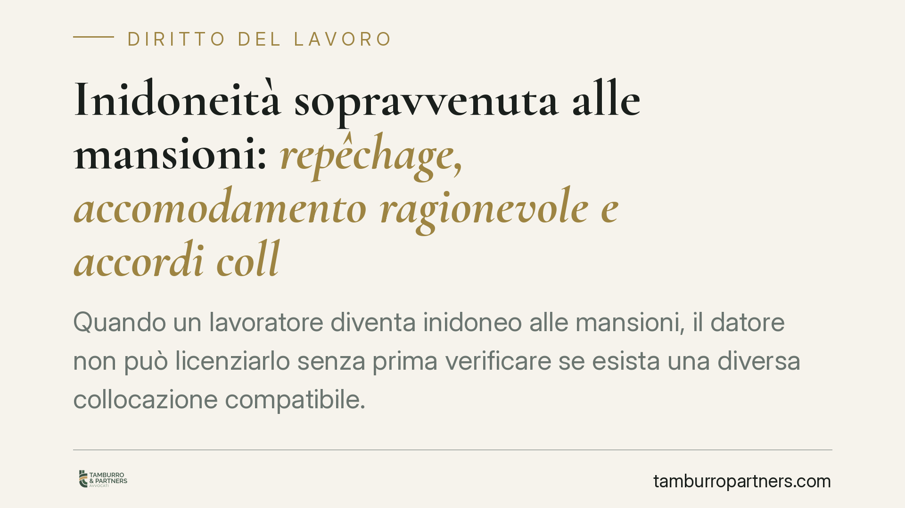

Inidoneità sopravvenuta alle mansioni: repêchage, accomodamento ragionevole e accordi collettivi
Quando un lavoratore diventa inidoneo alle mansioni, il datore non può licenziarlo senza prima verificare se esista una diversa collocazione compatibile. Una recente pronuncia della Corte d'Appello di Roma torna sul rapporto tra questo obbligo e gli accordi sindacali preesistenti. Il tema tocca repêchage, accomodamento ragionevole e i termini di decadenza per impugnare il licenziamento.

Il caso e la decisione
Un lavoratore, divenuto inidoneo alle mansioni originarie, contesta il provvedimento adottato dal datore di lavoro sostenendo la violazione dell'obbligo di ricollocazione. La Corte d'Appello di Roma (sentenza n. 2109/2025, sezione lavoro: estremi da verificare alla pubblicazione, in attesa del riscontro su data di deposito) ha affermato che l'obbligo di accomodamento ragionevole e di *repêchage* deve coordinarsi con gli accordi collettivi preesistenti. In quel contesto, il collocamento in aspettativa è stato ritenuto legittimo laddove mancassero i requisiti previsti dalla disciplina per le cosiddette mansioni protette (nel caso di specie, l'art. 24 dell'allegato A al R.D. 148/1931 per il settore degli autoferrotranvieri).
Il punto non è banale: la decisione non svuota l'obbligo di accomodamento, ma ne delimita i confini quando la cornice contrattuale collettiva fissa requisiti specifici per l'accesso a determinate posizioni.
Inquadramento normativo
Il *repêchage* è l'obbligo del datore di verificare, prima di licenziare, se il lavoratore possa essere adibito a mansioni diverse, anche inferiori, compatibili con il suo stato. La Cassazione lo qualifica da tempo come *extrema ratio*: il licenziamento per inidoneità sopravvenuta è legittimo solo se nessuna ricollocazione utile è concretamente possibile.
Il riferimento normativo naturale è l'art. 42 del D.Lgs. 81/2008, che impone al datore di adibire il lavoratore giudicato non idoneo dal medico competente, ove possibile, a mansioni equivalenti o inferiori, conservando la retribuzione corrispondente alle mansioni di provenienza nel caso di mansioni inferiori.
Su questo si innesta l'obbligo di accomodamento ragionevole, previsto dalla Direttiva 2000/78/CE in materia di parità di trattamento in materia di occupazione. La norma interna di recepimento è l'art. 3, comma 3-bis, del D.Lgs. 216/2003, che impone ai datori di adottare accomodamenti ragionevoli per garantire alle persone con disabilità la piena uguaglianza sul lavoro, nei limiti in cui ciò non comporti un onere sproporzionato. La giurisprudenza di legittimità ha chiarito che l'accomodamento è parte integrante della verifica di legittimità del licenziamento: non basta constatare l'inidoneità, occorre dimostrare di aver esplorato soluzioni organizzative alternative.
Il dato interpretativo rilevante della pronuncia romana è il bilanciamento: il coordinamento con gli accordi collettivi non elimina l'obbligo, ma lo calibra sulle posizioni effettivamente disponibili e sui requisiti che la contrattazione collettiva legittimamente prevede. In coerenza con l'orientamento eurounitario, l'accomodamento resta dovuto finché non diventa sproporzionato; gli accordi collettivi, però, concorrono a definire cosa sia esigibile in concreto.
Implicazioni pratiche
Per il lavoratore. L'inidoneità non apre automaticamente alla risoluzione del rapporto. Il datore deve provare di aver verificato ogni ricollocazione utile. Se ciò manca, il licenziamento è esposto a contestazione. Vanno però tenuti presenti i termini di decadenza: l'art. 6 della L. 604/1966 prevede sessanta giorni per l'impugnazione stragiudiziale del licenziamento e ulteriori centottanta giorni per il successivo deposito del ricorso in tribunale.
Per il datore di lavoro. L'onere della prova sulla impossibilità di ricollocazione grava su di lui. Documentare la verifica compiuta - posizioni esaminate, requisiti mancanti, soluzioni organizzative valutate - è dirimente. Il ricorso all'aspettativa, come nel caso esaminato, può essere una soluzione legittima quando la via della mansione alternativa è preclusa da requisiti contrattuali oggettivi.
Cosa fare in concreto
- Verificare tempestivamente la propria posizione nei termini di decadenza previsti dall'art. 6 L. 604/1966 (60 giorni per l'impugnazione, 180 per il deposito).
- Acquisire il giudizio del medico competente e la documentazione sanitaria che definisce i limiti dell'idoneità residua.
- Ricostruire, lato datore, l'istruttoria sul *repêchage*: posizioni disponibili, mansioni equivalenti o inferiori, requisiti collettivi applicabili.
- Valutare la praticabilità di accomodamenti ragionevoli ex art. 3, co. 3-bis, D.Lgs. 216/2003, distinguendo tra misure esigibili e oneri sproporzionati.
- Conservare traccia scritta di ogni verifica: in giudizio l'onere della prova dell'impossibilità di ricollocazione resta a carico del datore.
Contributo informativo a cura di Tamburro & Partners - Avv. Giuseppe Tamburro. Non costituisce parere legale.
Ogni storia di lavoro ha i suoi tempi.
Se gestisci HR e vuoi un confronto su contenzioso, ispezioni o licenziamenti, scrivi allo studio. Ti rispondiamo entro un giorno lavorativo.